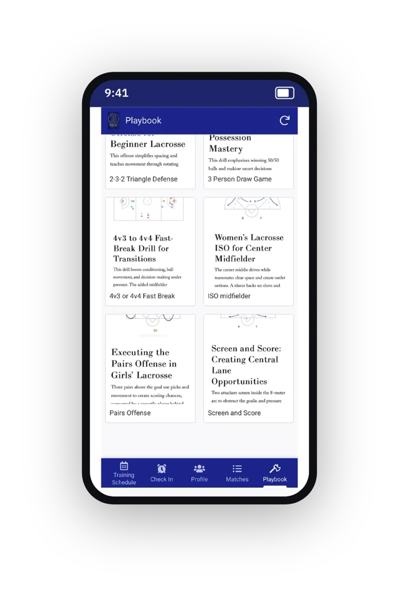
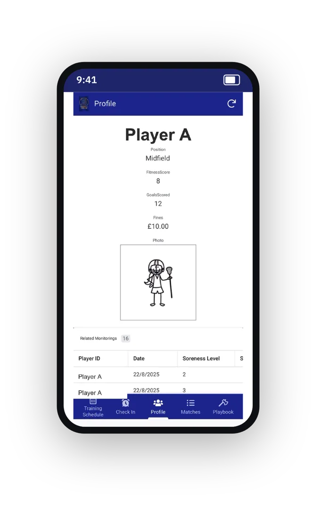
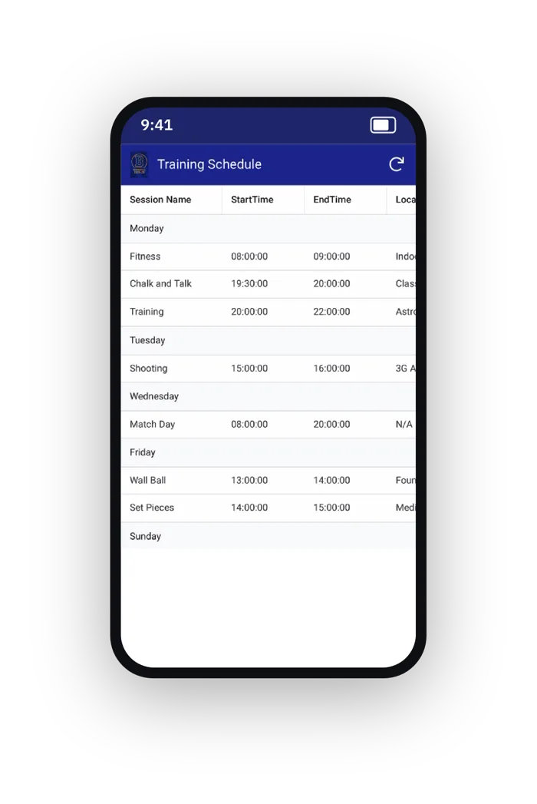
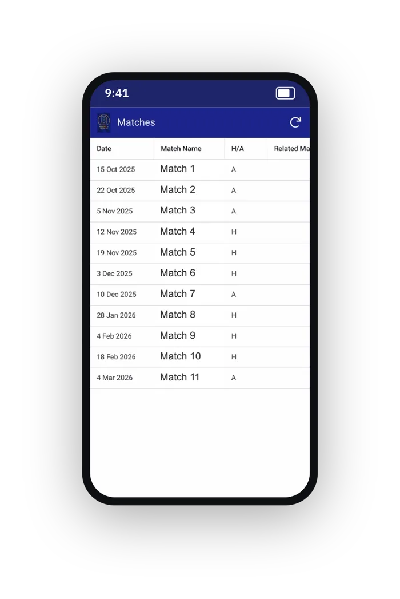
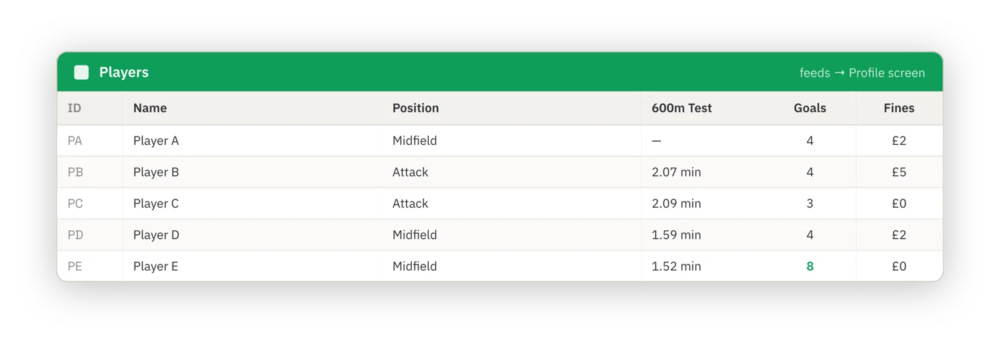
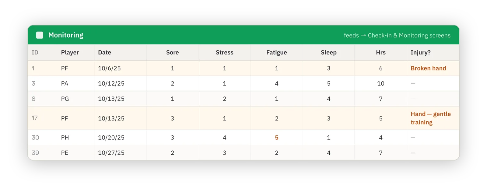

One app running an entire lacrosse squad.
Over two months I designed, built and self-coded a downloadable app for the University of Bath Women's 1st lacrosse team. It captured daily wellness and injury data, sleep and training load, the fixture calendar and the full set-play playbook.
- Role
- Sole designer and builder. Team captain and coach
- Squad
- Women's 1st team, 20 athletes
- Built with
- AppSheet, Google Sheets, custom app logic
- When
- 2025 - 26 season
Readiness was being guessed, not measured.
As captain and coach I was planning sessions without a reliable read on how the squad was actually feeling. Paper forms and scattered group chats meant information arrived late, or not at all.
I wanted the data to change what happened that day, rather than being logged after the fact.
Four signals and an injury flag.
Players completed a check-in before every training session and could flag any injuries or niggles that might affect their play.
I chose soreness, stress, fatigue and sleep as the core metrics because together they give an early read on both physical load and readiness. These are the signals that precede overtraining and injury.
The check-in was kept deliberately short, logged in under 20 seconds, so players would actually complete it every time. That design choice is what drove compliance up.






Six modules, one Google Sheet behind them all.
Every screen in the app is a view onto one linked workbook, with live two-way sync. The rows below are what actually lands in the sheet: live, timestamped and readable by staff. Player names are anonymised.


Self-built, and in daily use by the squad.
Check-in completion
A 20-second check-in in an app players already had removed the friction of paper forms. Most of the squad logged in consistently, giving staff data they could trust.
Injuries caught early
Niggles were flagged before sessions, so staff could rest or modify a player at the first sign, while problems were still small.
Less player burnout
Fatigue and sleep trends let coaches adapt session length and intensity to how the squad actually felt, easing load in heavy weeks.
Compliance is a design problem.
The best metric is worthless if athletes don't log it. Keeping the check-in short and living in an app they already had did more for data quality than any extra variable could.
It's the same hands-on, data-first approach I want to bring to wearable tech and performance analytics: build the tool, close the loop, act on what it shows.